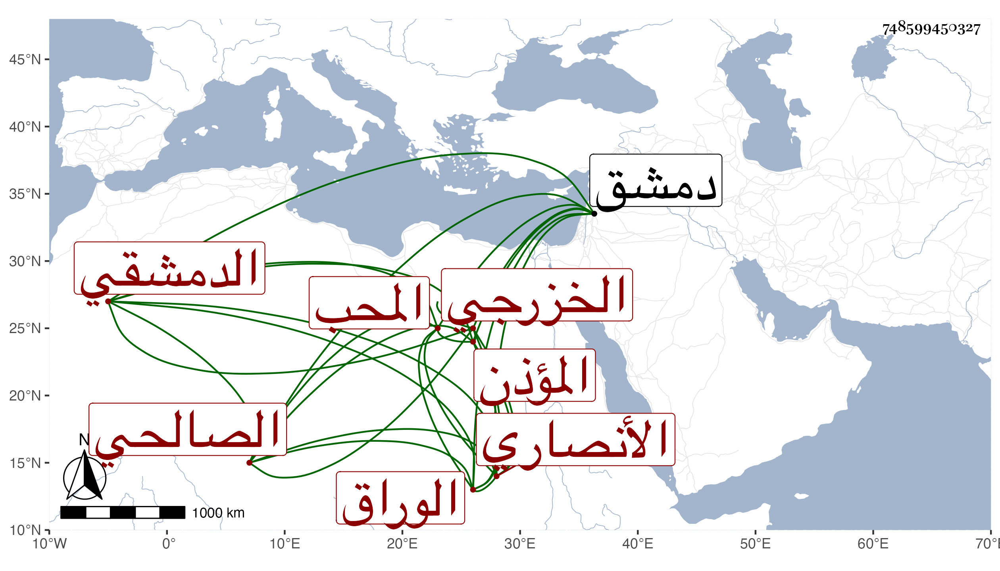

0902Sakhawi.DawLamic.ITO20230111-ara1.EIS1600.748599450327
Biography ID: 748599450327
488
محمد بن محمد بن محمد بن أحمد بن منبع بن صلح بن طهمان بن ملاعب بن فتوح بن غازي بن بكنجين بن علندي بن كاكو بن مصلح بن طهمان بن ملاعب بن حارثة بن سهم بن سعد بن المومل بن قيس بن سعد بن عبادة المحب الأنصاري الخزرجي الدمشقي الصالحي الوراق المؤذن بها . ذكره شيخنا في معجمه وقال هكذا أملى علي نسبه والعهدة عليه وأخبرني أن مولده سنة خمس عشرة وسبعمائة وكان يقول أنه سمع من الحجار ولكن لم يظفر لنا أصل سماعه عليه نعم سمع على الحافظين المزي والبرزالي والشمس بن المهندس وأبي محمد بن أبي التائب والشهاب بن الجزري وأبي بكر بن محمد بن الرضي وزينب ابنة الكمال وروى لنا عنه جماعة منهم شيخنا وقال أنه مات في حصار دمشق في جمادى الثانية سنة ثلاث ، وتبعه المقريزي في عقوده .
